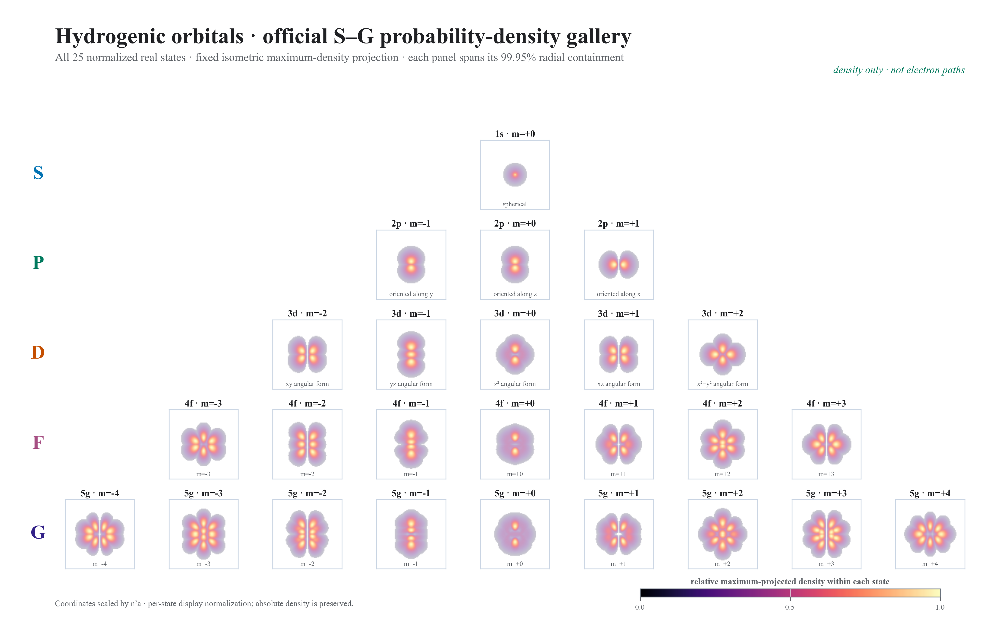
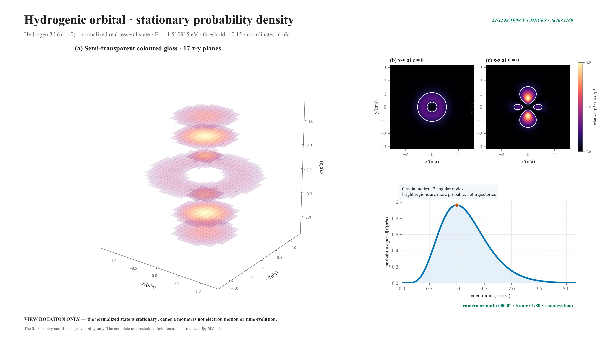
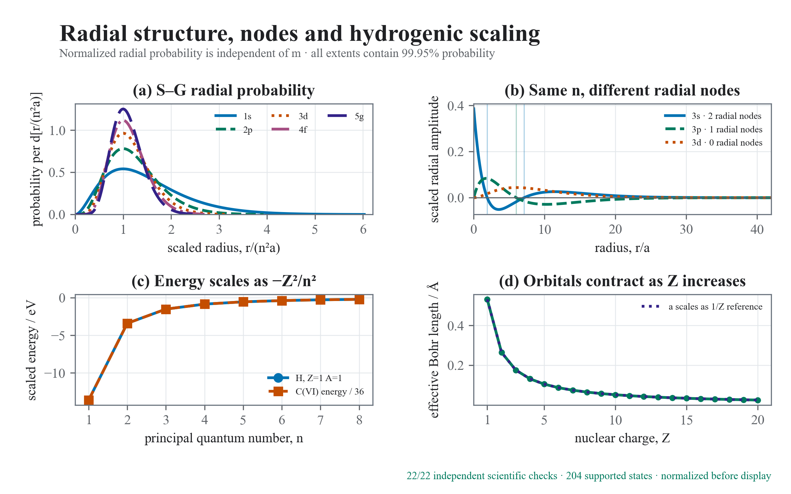
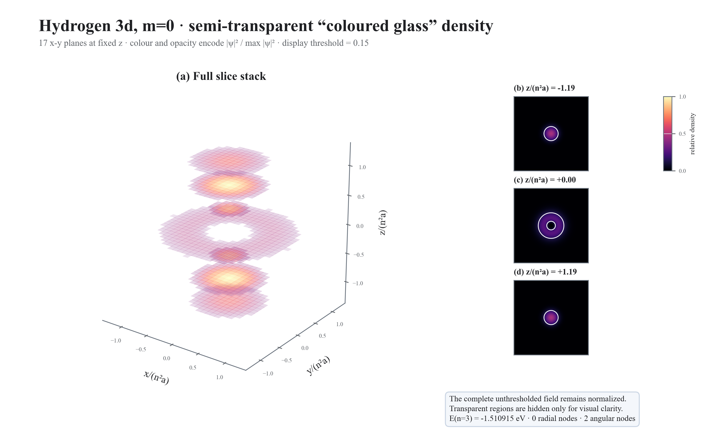

ψnlm = Rnl 𝒴lm
n ≥ 1 · 0 ≤ l < n · −l ≤ m ≤ +lNormalized wavefunctions · real basis · probability density
Orbitals are not orbits.
Build one stationary Coulomb eigenstate, separate its radial and angular structure, then look through the probability field as a stack of semitransparent planes.
Live coloured-glass density
Hydrogen-1 · 3d (m=+0)
Checking evidence
Sampling normalized density
The validated Task 10 orbital evidence could not be loaded.
Drag to orbit · wheel or buttons to zoom · arrow keys when the canvas is focused · camera motion is not electron motion
Density display controls
Display only. Cutoff and opacity never alter ∫|ψ|²dV = 1.
One state · two separable structures
Radius sets scale. Angles carve nodes.
A normalized radial function multiplies a normalized real tesseral harmonic. Squaring removes phase sign but preserves the nodal surfaces that organize every S-through-G density.ρnlm(r) = |ψnlm(r)|²
∫ρ d³r = 1 · density is non-negativea = (me/μ) a₀/Z
Length contracts approximately as 1/Z.En = −½Eh(μ/me)Z²/n²
Independent of l and m in this point-Coulomb model.Quantitative views of the same state
See the field. Read the nodes.
Orthogonal slices preserve quantitative cross-sections while radial probability isolates shell structure. Both update with the coloured-glass view.The validated Task 10 slice view could not be rendered.
The validated Task 10 radial profile could not be rendered.
Positive finite zeros of the associated Laguerre factor.
Planes or cones fixed by the real angular basis.
Density remains even even when ψ changes sign.
Complete official answer · 25 real states
S through G. Nothing omitted.
The representative sequence uses n = l + 1, so every family has zero radial nodes and exposes its full angular structure across all allowed magnetic states.m = 0 · 0 angular nodes
m = −1…+1 · 1 angular node
m = −2…+2 · 2 angular nodes
m = −3…+3 · 3 angular nodes
m = −4…+4 · 4 angular nodes

4K view rotation · stationary state
The camera moves. The density does not.
Eighty deterministic frames orbit the hydrogen 3d, m = 0 density. This is a change of viewpoint—not an orbital period, electron trajectory, probability flow, or time evolution.
Reproducible acceptance evidence
Exact states. Declared rendering.
The laboratory unlocks only after the complete state catalog, official gallery, radial profiles, node table, independent science report, static-media manifest, and motion manifest agree.Normalization, orthogonality, analytic anchors, nodes, parity, and Z scaling.
Every valid real basis state through n = 8.
Every magnetic state for 1s, 2p, 3d, 4f, and 5g.
300-DPI figures, editable vectors, embedded PDFs, and inspected 4K animation.


Scientific state
Loading committed evidence
All controls remain disabled until every validated data and media layer agrees.
Checking